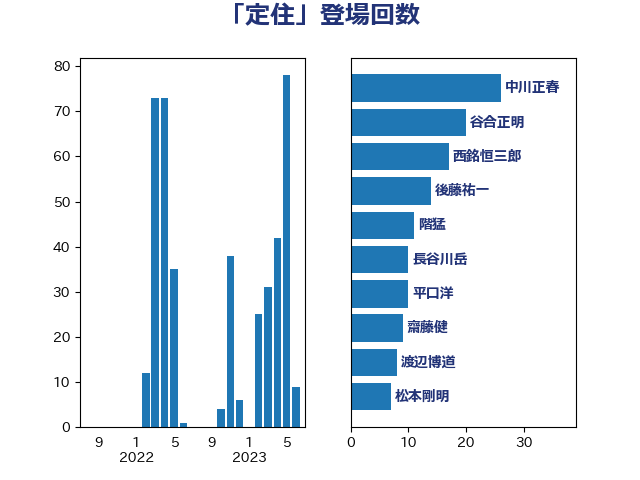

単語「定住」

| 中川正春 | 立憲民主党 | 26 回 |
| 谷合正明 | 公明党 | 20 回 |
| 西銘恒三郎 | 自由民主党 | 17 回 |
| 後藤祐一 | 立憲民主党 | 14 回 |
| 階猛 | 立憲民主党 | 11 回 |
| 長谷川岳 | 自由民主党 | 10 回 |
| 平口洋 | 自由民主党 | 10 回 |
| 齋藤健 | 自由民主党 | 9 回 |
| 渡辺博道 | 自由民主党 | 8 回 |
| 松本剛明 | 自由民主党 | 7 回 |
| 岸田文雄 | 自由民主党 | 7 回 |
| 上田英俊 | 自由民主党 | 7 回 |
| 藤岡隆雄 | 立憲民主党 | 6 回 |
| 斉藤鉄夫 | 公明党 | 6 回 |
| 岡田直樹 | 自由民主党 | 6 回 |
| 田名部匡代 | 立憲民主党 | 5 回 |
| 山本博司 | 公明党 | 5 回 |
| 赤羽一嘉 | 公明党 | 4 回 |
| 稲津久 | 公明党 | 4 回 |
| 古川禎久 | 自由民主党 | 4 回 |
| 佐藤啓 | 自由民主党 | 4 回 |
| 串田誠一 | 日本維新の会 | 4 回 |
| 高橋光男 | 公明党 | 3 回 |
| 葉梨康弘 | 自由民主党 | 3 回 |
| 細田博之 | 自由民主党 | 3 回 |
| 簗和生 | 自由民主党 | 3 回 |
| 秋葉賢也 | 自由民主党 | 3 回 |
| 福島伸享 | 無所属 | 3 回 |
| 新妻秀規 | 公明党 | 3 回 |
| 山田勝彦 | 立憲民主党 | 3 回 |
| 山本太郎 | れいわ新選組 | 3 回 |
| 中川貴元 | 自由民主党 | 3 回 |
| 鳩山二郎 | 自由民主党 | 2 回 |
| 鬼木誠 | 立憲民主党 | 2 回 |
| 鈴木敦 | 国民民主党 | 2 回 |
| 辻清人 | 自由民主党 | 2 回 |
| 神谷裕 | 立憲民主党 | 2 回 |
| 石橋通宏 | 立憲民主党 | 2 回 |
| 永岡桂子 | 自由民主党 | 2 回 |
| 横沢高徳 | 立憲民主党 | 2 回 |
| 梅村みずほ | 日本維新の会 | 2 回 |
| 尾身朝子 | 自由民主党 | 2 回 |
| 勝部賢志 | 立憲民主党 | 2 回 |
| 加田裕之 | 自由民主党 | 2 回 |
| 長谷川英晴 | 自由民主党 | 1 回 |
| 長友慎治 | 国民民主党 | 1 回 |
| 鎌田さゆり | 立憲民主党 | 1 回 |
| 金子恵美 | 立憲民主党 | 1 回 |
| 金城泰邦 | 公明党 | 1 回 |
| 里見隆治 | 公明党 | 1 回 |
| 道下大樹 | 立憲民主党 | 1 回 |
| 輿水恵一 | 公明党 | 1 回 |
| 赤池誠章 | 自由民主党 | 1 回 |
| 赤木正幸 | 日本維新の会 | 1 回 |
| 西田実仁 | 公明党 | 1 回 |
| 若松謙維 | 公明党 | 1 回 |
| 若宮健嗣 | 自由民主党 | 1 回 |
| 紙智子 | 日本共産党 | 1 回 |
| 空本誠喜 | 日本維新の会 | 1 回 |
| 福重隆浩 | 公明党 | 1 回 |
| 福島みずほ | 社会民主党 | 1 回 |
| 石川大我 | 立憲民主党 | 1 回 |
| 石垣のりこ | 立憲民主党 | 1 回 |
| 石井苗子 | 日本維新の会 | 1 回 |
| 漆間譲司 | 日本維新の会 | 1 回 |
| 渡辺創 | 立憲民主党 | 1 回 |
| 江島潔 | 自由民主党 | 1 回 |
| 横山信一 | 公明党 | 1 回 |
| 柳ヶ瀬裕文 | 日本維新の会 | 1 回 |
| 末松信介 | 自由民主党 | 1 回 |
| 木原誠二 | 自由民主党 | 1 回 |
| 日下正喜 | 公明党 | 1 回 |
| 新垣邦男 | 立憲民主党 | 1 回 |
| 川合孝典 | 国民民主党 | 1 回 |
| 岸真紀子 | 立憲民主党 | 1 回 |
| 岡田克也 | 立憲民主党 | 1 回 |
| 寺田学 | 立憲民主党 | 1 回 |
| 守島正 | 日本維新の会 | 1 回 |
| 大塚耕平 | 国民民主党 | 1 回 |
| 堤かなめ | 立憲民主党 | 1 回 |
| 堀井巌 | 自由民主党 | 1 回 |
| 吉良州司 | 無所属 | 1 回 |
| 吉良よし子 | 日本共産党 | 1 回 |
| 吉田宣弘 | 公明党 | 1 回 |
| 保岡宏武 | 自由民主党 | 1 回 |
| 伊藤孝恵 | 国民民主党 | 1 回 |
| 伊波洋一 | 無所属 | 1 回 |
| 三反園訓 | 無所属 | 1 回 |
| 三上えり | 立憲民主党 | 1 回 |